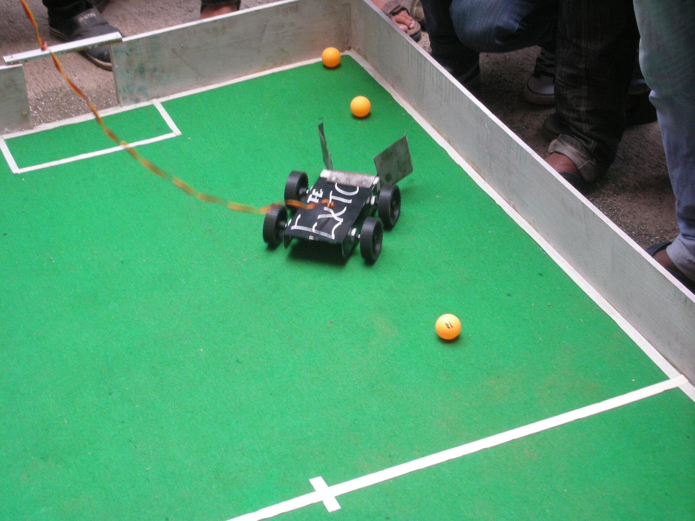

Campus Catalyst: Cycle Rental Platform
Aimed at improving campus life. We identified that the cycling club bicycles on our campus remain completely idle outside their weekly trips. We engineered a community rental platform allowing students to rent available cycles for a nominal fee for campus commute.
•
Architecture & Backend: Built a functional backend powered by Supabase for real-time inventory tracking, user rentals, and state management.
•
The Win Factor: Delivered a working, testable product that solved a real campus efficiency problem, earning 2nd Place / Runner-Up finish.
Supabase Backend
Campus Mobility
Real-Time State
2nd Place Podium

Campus Catalyst 2nd Place